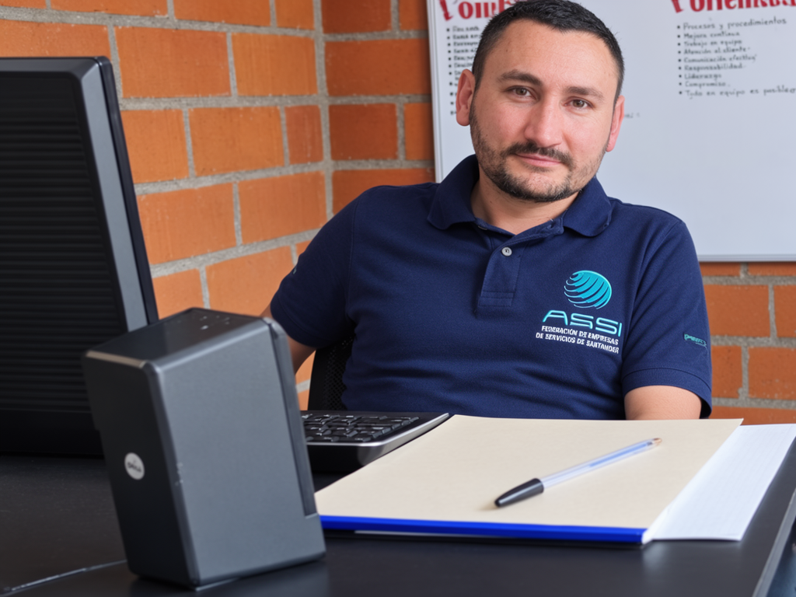

¿Quiénes Somos?
Somos un equipo de especialistas apasionados por la tecnología, dedicados a ofrecer soporte, asesoría y soluciones robustas en sistemas de información para garantizar la continuidad operativa de su empresa.

"Fundamos ASSI con la firme convicción de que la infraestructura tecnológica no debe ser un obstáculo, sino el motor principal que impulsa el crecimiento de las empresas. Con años de experiencia en sistemas y servidores, nuestro compromiso diario es garantizar que la tecnología de nuestros clientes nunca se detenga."
Conozca la base de nuestro compromiso tecnológico y empresarial.
Somos un equipo de especialistas apasionados por la tecnología, dedicados a ofrecer soporte, asesoría y soluciones robustas en sistemas de información para garantizar la continuidad operativa de su empresa.
Proveer infraestructura tecnológica de alta calidad y servicios de soporte eficientes, convirtiéndonos en el aliado estratégico que impulsa el crecimiento y la seguridad de nuestros clientes corporativos.
Ser reconocidos a nivel nacional como la empresa líder en soluciones de servidores e informática corporativa, destacando por nuestra innovación, metodología y excelencia en el servicio al cliente.
Contamos con años de trayectoria respaldando la infraestructura tecnológica de empresas reconocidas en la región.
Aplicamos las mejores prácticas y estándares de la industria para ofrecer soluciones modernas, seguras y escalables.
No solo reparamos, nos convertimos en su aliado estratégico (Outsourcing) con tiempos de respuesta excepcionales.